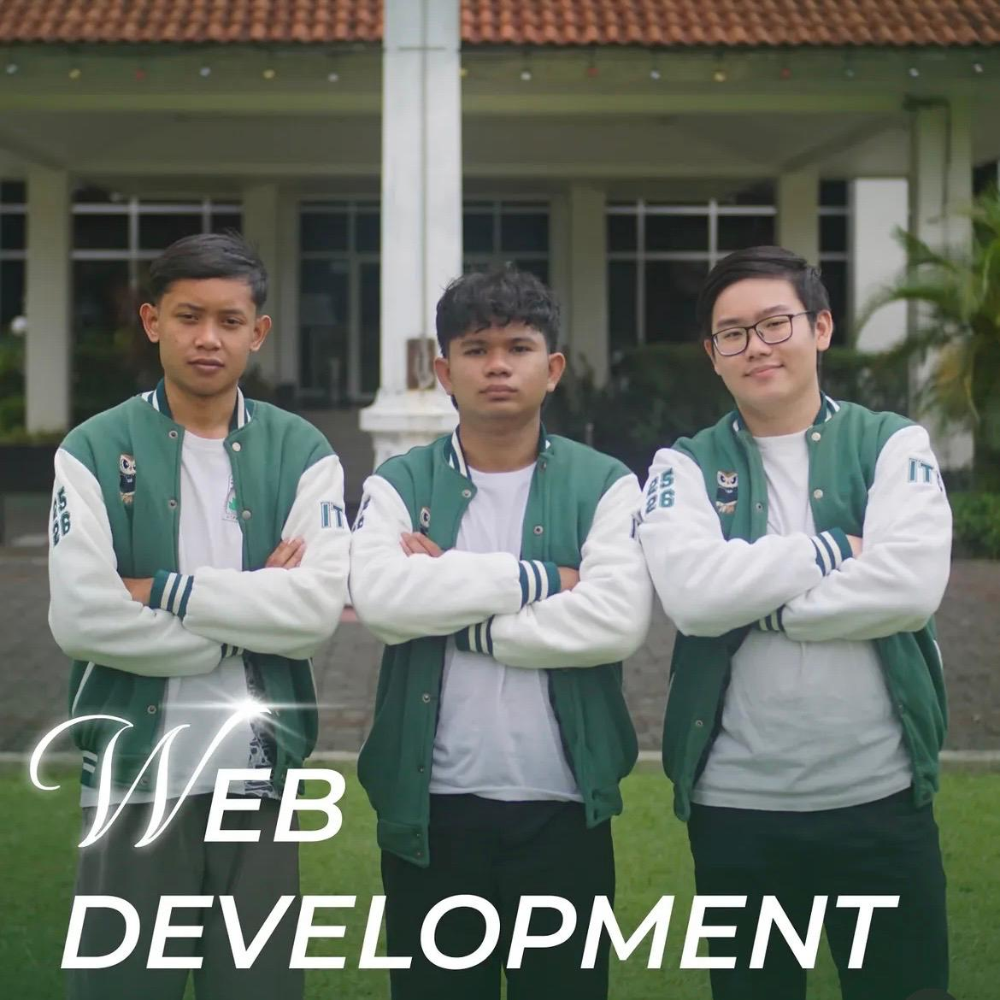

Bidang yang berfokus pada pengembangan website dan aplikasi berbasis web yang modern, responsif, dan fungsional.
Mengembangkan tampilan antarmuka dan sistem web yang mampu memberikan pengalaman penggunaan yang baik dan performa yang optimal.
Landing page, company profile, dashboard, hingga aplikasi web interaktif yang siap dikembangkan lebih lanjut.
Frontend Developer, Fullstack Developer, Web Designer, dan Software Engineer.